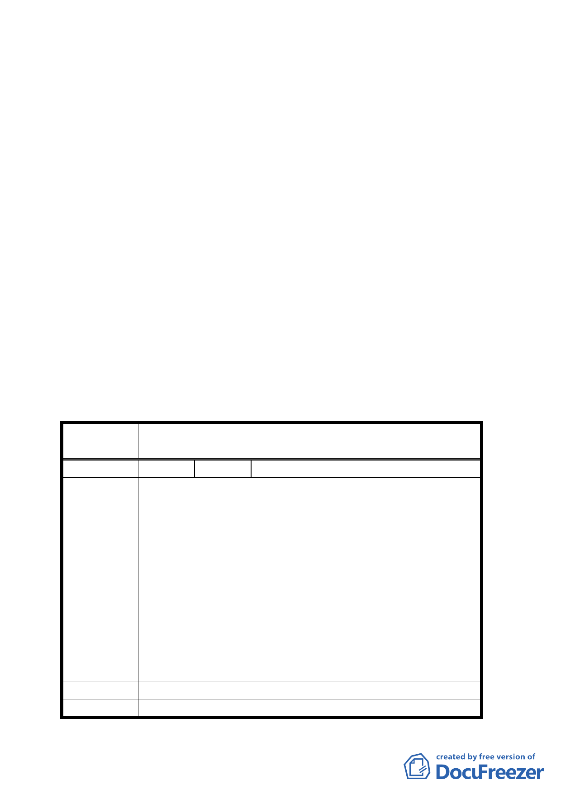

八、本會依委員會議決議於九十三年三月八日召開專案小組
審查會議，會議決議：「請軍備局與總政治作戰局於三個
月內，將 536 巷兩側基地整體開發之構想向國防部報告，
並請發展局給予適當專業上之協助，俟最新規劃構想送
本案專案小組委員審酌後，再提專案小組審查或逕提委
員會議審議」。
九、市府於 94 年 3 月 9 日府都規字第 09405862300 號函送修
正方案到會。
決議:
一、本案人行步道範圍依修正方案通過，因兩側土地分屬國
防部總政治作戰局、國防部軍備局，且均已達成共識，
得免重新公開展覽。
二、公民或團體所提意見審決如后附綜理表。
臺北市都市計畫委員會公民或團體所提意見綜理表
案
名
變更台北市中山區北安路五三六巷第三種住宅區為
人行步道用地計畫案
編 號 １ 陳情人 國防部軍備局
土地標示：中山區北安段三小段八一六地號。
一、本案土地為配合本部「博愛分案」搬遷計畫，預測興
建本部職務官舍使用，為使土地使用現況與都市計畫
相符，俾利使用與管理。
二、為兼顧地方發展需要及軍方權益，本局於九十一年十
陳情理由
一月二十七日邀集臺北市都市發展局等單位研商，惟
研商結論「本部同意開闢四米寬人行步道，惟請臺北
市政府同意依土地使用分區管制規則第八十條之一規
定，獎勵本部主動提供公益性設施，同意提高原基準
容積百分之五，並納入法定空地」未獲貴府同意，有
關案內五三六巷道土地都市計畫變更為人行步道，涉
及本局列管營地部分，歉難同意。
建 議 辦 法 案內土地都市計畫原為第三種住宅區，建議維持原編定。
委員會決議 本案人行步道依市府 94 年 3 月 9 日府都規字第
一○